HACKATHON in4IT
Ed. a II-a: 20 - 23 iunie 2024
Digital Future
Ediția a II-a a hackathon-ului int4it-UAB, organiazt de Universitatea "1 Decembrie 1918" din Alba Iulia, 20-23 iunie 2024.
Concursul constă în dezvoltarea și prezentarea unor proiecte ce includ o aplicatie software, focalizare pe tema digitalizare.
REGULAMENT PARTICIPARE
Hackathon in4it-UAB se adresează studenților de la orice universitate
din țară.
Înscrierea poate fi făcută atât individual cât și în echipe de maxim 5
persoane, indicând o temă de interes preferată.
Fiecare candidat, în momentul înregistrării, garantează că informațiile
furnizate împreună sunt adevărate.
________________________________________________________________________
__________________________________________
________________________
__________________
CALENDAR
Perioada de inscriere: 1 feb – 15 martie 2024
Preselecția: 18 – 22 martie 2024
Afișarea echipelor selectate: 25 martie 2023
Main Image by Marin Plepi
